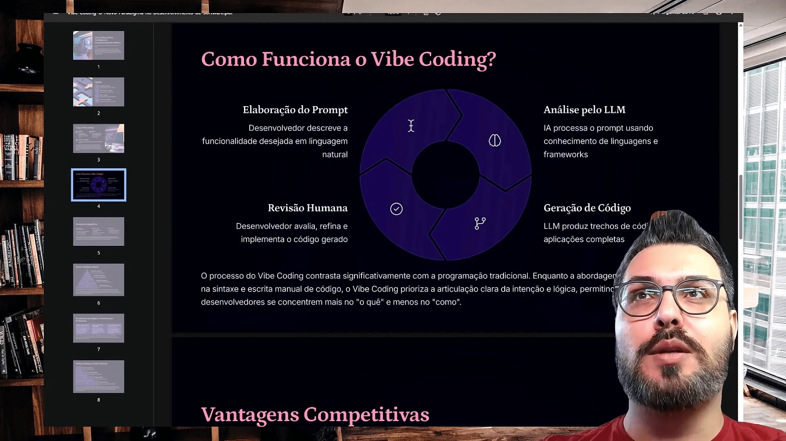
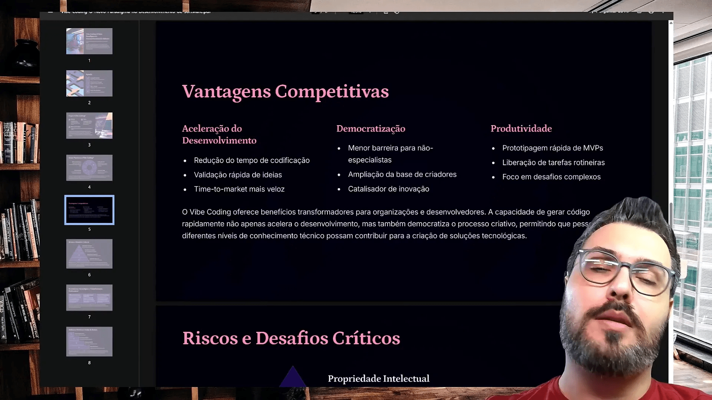
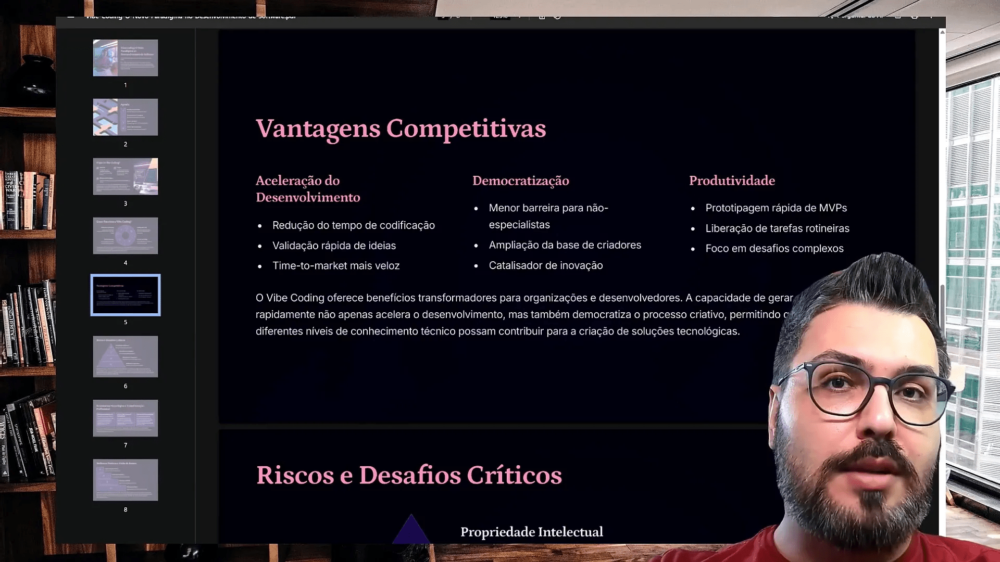
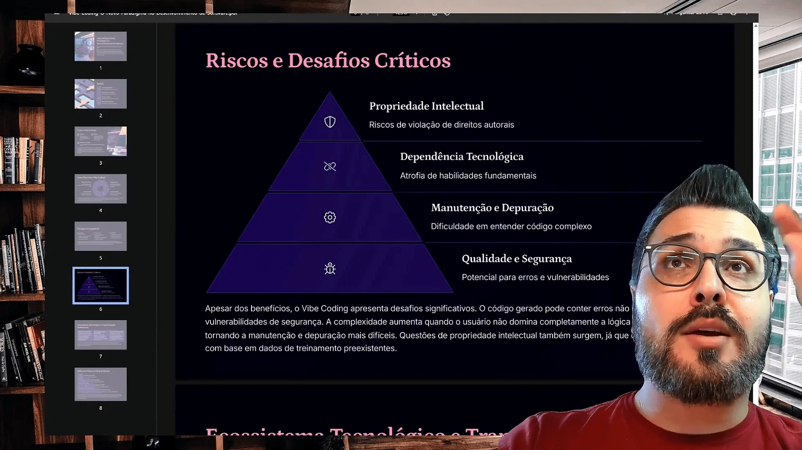
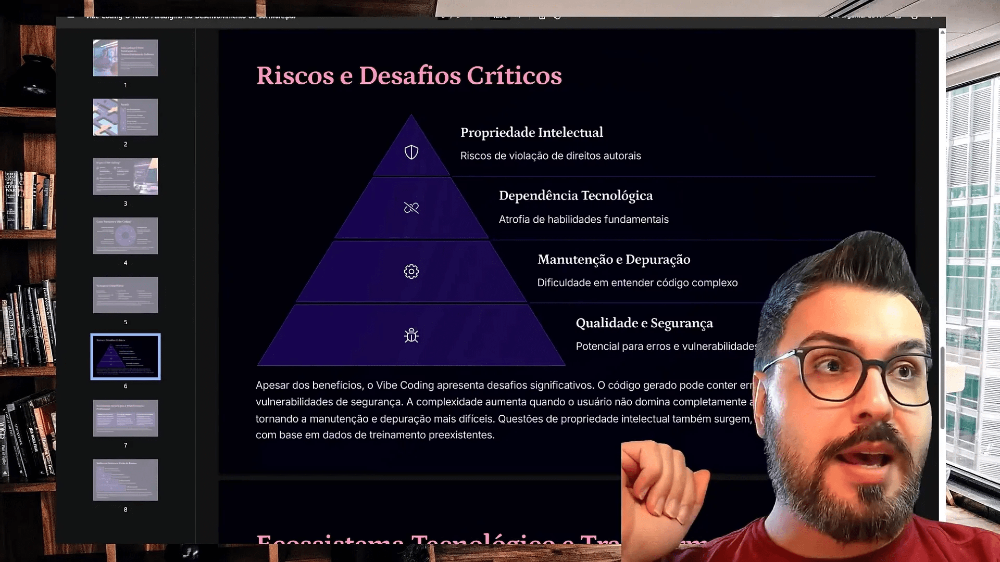
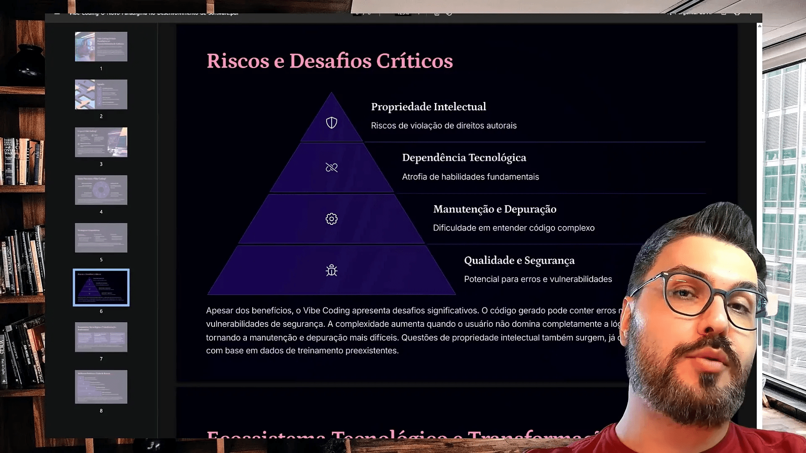
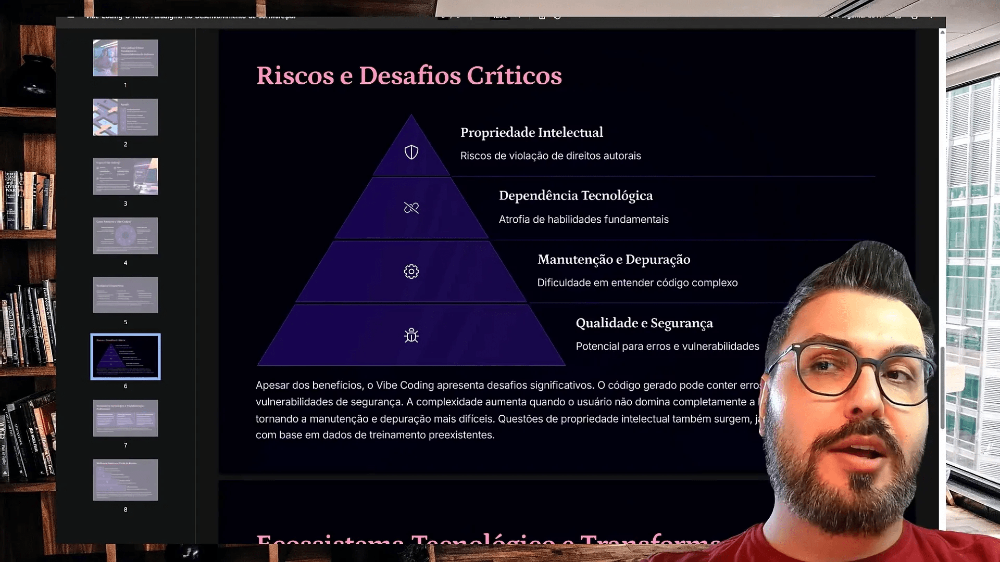
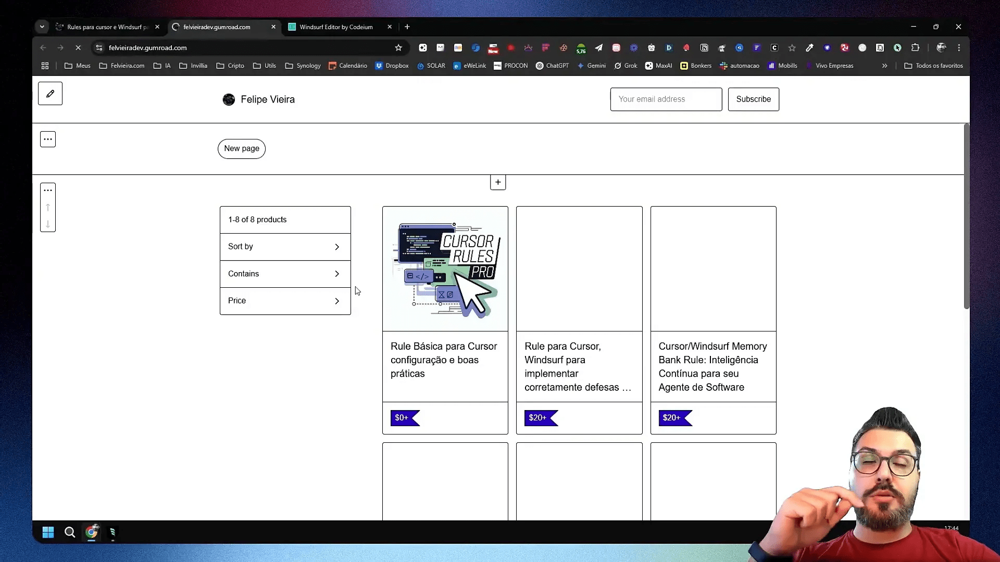
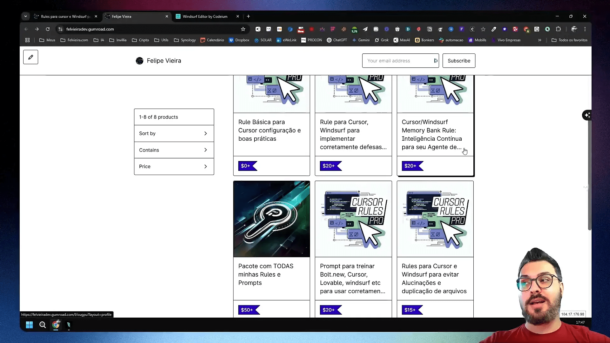
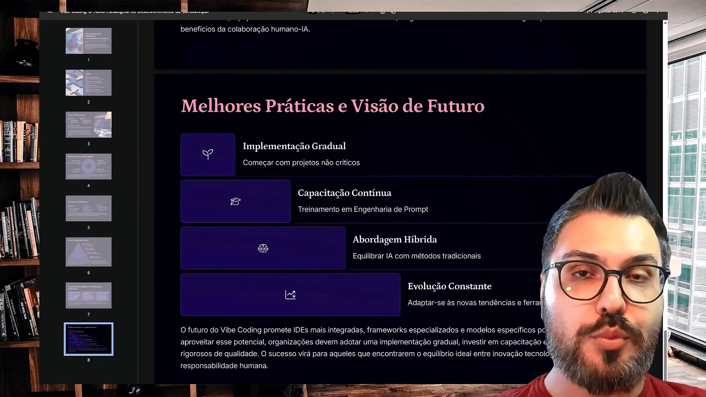

Neste post, vamos explorar como a inteligência artificial está revolucionando o desenvolvimento frontend e o design através do conceito de Vibe Code. Descubra como você pode utilizar essas tecnologias para otimizar seu trabalho e evitar erros comuns.
Sumário
- 🌟 Introdução ao Vibe Code
- 🌐 O que é Web Code?
- 🔧 Como Funciona o Vibe Code?
- 🚀 Vantagens do Vibe Code
- ⚠️ Os Riscos Envolvidos
- 🎯 Foco do Vibe Code
- 🤖 Como Usar a Inteligência Artificial com Vibe Code
- 🔍 Importância da Revisão Humana
- 📈 MVP e Fluxo de Desenvolvimento
- 🌍 Democratização da Tecnologia
- 📜 Compliance e Licenciamento
- 🔗 Dependência Tecnológica
- 🛠️ Manutenção e Depuração de Código
- 🔒 Qualidade e Segurança no Vibe Code
- 🛠️ Ferramentas que Ajudam no Desenvolvimento
- 📏 Melhores Práticas de Desenvolvimento
- 📊 Consultoria e Acompanhamento
- 🔌 MCP: O Conector de Integração
- 📝 Conclusão e Chamadas para Ação
- ❓ FAQ
🌟 Introdução ao Vibe Code
O Vibe Code é uma abordagem inovadora que combina a interação humana com a programação. Ele permite que desenvolvedores e designers criem sistemas de forma mais intuitiva, utilizando o que chamamos de “feeling” em vez de depender exclusivamente de código. Essa técnica se destaca em um momento em que a tecnologia avança rapidamente, oferecendo novas maneiras de resolver problemas de forma eficaz.
🌐 O que é Web Code?
Web Code é um conceito que se refere à programação voltada para a web, mas com uma nova perspectiva. Em vez de escrever linhas de código, os usuários interagem com sistemas de forma mais visual e intuitiva. Essa abordagem facilita a criação e a implementação de soluções, permitindo que pessoas de diferentes áreas, não apenas programadores, possam contribuir com ideias e implementações.
O foco principal do Web Code é democratizar o acesso à tecnologia, tornando-a acessível a todos, independentemente de seu nível de conhecimento técnico.
Principais características do Web Code:
- Interação intuitiva: Permite que os usuários comuniquem suas necessidades de forma não técnica.
- Automação: Utiliza ferramentas que facilitam a criação de sistemas sem a necessidade de codificação tradicional.
- Foco na experiência do usuário: Prioriza a entrega de soluções que atendem às necessidades reais dos usuários.
🔧 Como Funciona o Vibe Code?
O Vibe Code funciona através da interação direta com a inteligência artificial. Usuários podem dar comandos em linguagem natural, e a IA converte essas instruções em código. Isso reduz a necessidade de conhecimento técnico profundo e permite que mais pessoas se envolvam no processo de desenvolvimento.
Uma das ferramentas mais utilizadas para implementar o Vibe Code é a OpenAI, que facilita a comunicação entre usuários e sistemas. Ao integrar essa tecnologia, as equipes podem acelerar o processo de desenvolvimento e reduzir o retrabalho.
Etapas fundamentais do Vibe Code:
- Definição do projeto: O usuário apresenta a ideia e o que deseja alcançar.
- Interação com a IA: A IA recebe as instruções e gera o código correspondente.
- Revisão e teste: O código gerado passa por uma revisão humana para garantir que atende às expectativas.
🚀 Vantagens do Vibe Code
O Vibe Code oferece uma série de benefícios que podem transformar a maneira como desenvolvemos software.
Principais vantagens:
- Aceleração do desenvolvimento: Projetos que antes levariam meses podem ser concluídos em semanas.
- Redução de erros: A comunicação clara com a IA ajuda a minimizar mal-entendidos e erros comuns.
- Facilidade de uso: Pessoas sem experiência em programação podem contribuir com ideias e soluções.
- Democratização da tecnologia: A tecnologia se torna acessível a um público mais amplo.
⚠️ Os Riscos Envolvidos
Apesar das vantagens, o Vibe Code também apresenta desafios e riscos que precisam ser considerados. É essencial que os usuários estejam cientes desses fatores para uma implementação eficaz.
Principais riscos:
- Dependência da tecnologia: A falta de conhecimento técnico pode levar à dependência excessiva de ferramentas de IA.
- Vulnerabilidades de segurança: A geração automática de código pode resultar em falhas de segurança se não for revisada adequadamente.
- Qualidade do código: O código gerado pode não atender aos padrões de qualidade esperados, especialmente em projetos complexos.
🎯 Foco do Vibe Code
O foco do Vibe Code não é substituir programadores, mas sim ampliar as possibilidades de colaboração entre diferentes áreas. O objetivo é transformar ideias em produtos viáveis, permitindo que qualquer pessoa, independentemente de sua formação técnica, contribua para o desenvolvimento.
Além disso, o Vibe Code é uma ferramenta poderosa para automatizar tarefas repetitivas, melhorando a eficiência no dia a dia das equipes de trabalho.
🤖 Como Usar a Inteligência Artificial com Vibe Code
Integrar a inteligência artificial ao Vibe Code é um passo crucial para aproveitar ao máximo suas capacidades. A seguir, algumas dicas sobre como utilizar essa tecnologia de forma eficaz:
Dicas para integração:
- Defina claramente suas necessidades: Antes de interagir com a IA, tenha uma ideia clara do que deseja alcançar.
- Utilize ferramentas de IA confiáveis: Opte por plataformas reconhecidas que garantam segurança e qualidade no código gerado.
- Revise o código gerado: Sempre faça uma revisão do código antes de implementá-lo. Isso ajuda a identificar possíveis erros e vulnerabilidades.
- Mantenha-se atualizado: A tecnologia está em constante evolução, então é importante acompanhar as novidades e melhorias nas ferramentas de IA.
🔍 Importância da Revisão Humana
A revisão humana no desenvolvimento com inteligência artificial é crucial. A IA pode gerar código rapidamente, mas sem a supervisão de um humano, os erros podem passar despercebidos. Isso é ainda mais relevante ao trabalhar com ferramentas que transformam comandos em código.
É necessário que o desenvolvedor compreenda o que foi alterado e se as mudanças estão dentro do contexto solicitado. Isso garante que o código gerado atenda às expectativas e funcione corretamente.

📈 MVP e Fluxo de Desenvolvimento
O conceito de MVP, ou Mínimo Produto Viável, é fundamental no desenvolvimento ágil. Ele permite testar ideias rapidamente no mercado, coletar feedback e iterar com base nas necessidades dos usuários.
Utilizando o vibe Code, você pode acelerar o processo de desenvolvimento. Em vez de levar meses para criar um protótipo, você pode ter uma versão funcional em questão de dias, permitindo um fluxo de desenvolvimento mais dinâmico.

🌍 Democratização da Tecnologia
O vibe Code democratiza o acesso ao desenvolvimento de software. Com ferramentas que permitem interações intuitivas com a inteligência artificial, pessoas sem formação técnica podem contribuir. Isso transforma não apenas a forma como desenvolvemos, mas também quem pode desenvolver.
Esse acesso ampliado cria um ambiente onde ideias de diversos setores podem se transformar em produtos, ajudando a resolver problemas comuns enfrentados por muitos profissionais.
Turbine seu Desenvolvimento com Prompts!
Você já sonhou em criar seu próprio aplicativo mas pensou que precisaria ser um gênio da programação? Chegou a hora de transformar esse sonho em realidade! Com as ferramentas no-code de hoje, você pode criar aplicativos profissionais sem escrever uma única linha de código.

📜 Compliance e Licenciamento
Ao utilizar código de repositórios abertos, é essencial entender as licenças associadas. Algumas permitem uso comercial, enquanto outras não. A falta de atenção a esses detalhes pode resultar em complicações legais futuras.
Além disso, a integração com a inteligência artificial deve ser feita de maneira consciente, garantindo que o código enviado para a IA não infrinja direitos autorais ou normas de compliance.

🔗 Dependência Tecnológica
A dependência de ferramentas de inteligência artificial pode ser um risco. Se um sistema falhar ou a qualidade da IA diminuir, aqueles que não possuem conhecimentos técnicos podem ficar sem alternativas. É fundamental que os desenvolvedores mantenham um entendimento básico sobre programação.
Isso garante que, mesmo diante de falhas, eles possam encontrar soluções alternativas e não fiquem à mercê da tecnologia.

🛠️ Manutenção e Depuração de Código
A manutenção do código gerado por IA pode ser desafiadora. Sem um entendimento claro do que foi gerado, a depuração se torna um processo difícil. É essencial ter um desenvolvedor que compreenda o código e possa realizar ajustes quando necessário.
Além disso, a documentação adequada durante o desenvolvimento pode facilitar a manutenção futura, permitindo que outros desenvolvedores entendam o histórico do projeto.

🔒 Qualidade e Segurança no Vibe Code
A qualidade do código gerado pela IA pode não atender aos padrões esperados. É fundamental que desenvolvedores implementem práticas de segurança e qualidade desde o início. Isso inclui a utilização de boas práticas de programação e a implementação de medidas de segurança.
Ferramentas de análise de segurança devem ser integradas ao fluxo de trabalho para minimizar riscos, especialmente em aplicativos que lidam com dados sensíveis.

🛠️ Ferramentas que Ajudam no Desenvolvimento
Uma das chaves para otimizar o uso da inteligência artificial no desenvolvimento frontend é saber escolher as ferramentas certas. Aqui estão algumas das mais eficazes:
Ferramentas Recomendadas:
- OpenAI: Uma das principais ferramentas para interação com IA, ideal para geração de código e automação de tarefas.
- Cursor: Facilita a integração com várias APIs, permitindo que você interaja com a IA de forma mais fluida.
- Bolt: Uma ferramenta que ajuda na automação e na criação de protótipos rapidamente, ideal para MVPs.
- Windsurf: Focado em padronização e organização de projetos, essencial para manter a qualidade do código.

📏 Melhores Práticas de Desenvolvimento
Para garantir que você esteja tirando o máximo proveito das ferramentas e da inteligência artificial, adotar algumas melhores práticas é fundamental.
Práticas Essenciais:
- Documentação: Sempre documente o que você desenvolve. Isso não só ajuda na manutenção, mas também na colaboração com outros desenvolvedores.
- Revisão de Código: Revise o código gerado pela IA. Verifique se ele atende às suas expectativas e se não houve alterações indesejadas.
- Teste de Funcionalidade: Após a geração do código, realize testes para garantir que tudo funcione como deveria.
- Iteração Contínua: Não tenha medo de voltar e refinar o que já foi feito. O feedback é essencial para melhorias.

📊 Consultoria e Acompanhamento
Para aqueles que estão começando ou enfrentando dificuldades, a consultoria é uma excelente opção. Um especialista pode ajudar a identificar os pontos fracos e sugerir melhorias.
Benefícios da Consultoria:
- Orientação Personalizada: Cada projeto é único. Consultores podem oferecer soluções específicas para suas necessidades.
- Correção de Erros: Profissionais experientes podem identificar e corrigir problemas que você pode não perceber.
- Melhores Práticas: Consultores podem compartilhar conhecimentos sobre as melhores práticas do mercado, ajudando a evitar armadilhas comuns.
🔌 MCP: O Conector de Integração
O MCP é um conceito crucial para quem trabalha com integração de sistemas. Ele atua como um adaptador entre diferentes ferramentas e plataformas.
Vantagens do MCP:
- Facilidade de Integração: O MCP simplifica o processo de conectar sua aplicação a outras APIs e serviços.
- Agilidade no Desenvolvimento: Com o MCP, você pode economizar tempo ao evitar a necessidade de escrever código de integração do zero.
- Redução de Erros: Um conector bem projetado minimiza a chance de erros na comunicação entre sistemas.
📝 Conclusão e Chamadas para Ação
Concluindo, a inteligência artificial, combinada com as práticas de desenvolvimento frontend e ferramentas como o MCP, pode revolucionar a forma como você trabalha. No entanto, é vital que você se mantenha informado e pratique as melhores técnicas.
Se você está pronto para dar o próximo passo, considere as seguintes ações:
- Implementar as ferramentas sugeridas em seus projetos.
- Buscar consultoria para aprimorar suas habilidades.
- Participar de comunidades online para trocar experiências e aprender com outros desenvolvedores.

❓ FAQ
Aqui estão algumas perguntas frequentes que podem ajudar a esclarecer suas dúvidas sobre o uso da inteligência artificial no desenvolvimento frontend.
Perguntas Comuns:
- Posso usar o vibe Code sem experiência prévia? Sim, mas um entendimento básico de programação pode ser muito útil.
- Quais são os riscos de usar IA no desenvolvimento? Os principais riscos incluem a dependência da tecnologia e a possibilidade de gerar código inseguro.
- Como posso garantir a qualidade do código gerado? Sempre revise o código, faça testes e, se possível, utilize ferramentas de análise de segurança.
Este artigo é baseado no meu video TUDO sobre Vibe Coding! O que É, Como Usar e ERROS FATAIS a Evitar pra mais detalhes vejam direto no youtube.